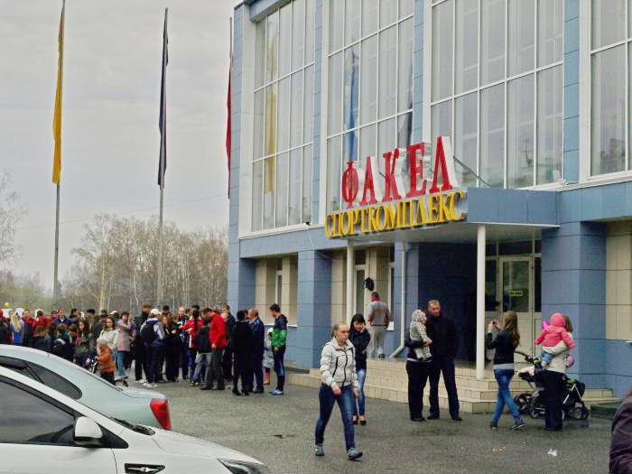

Спорткомплекс Факел
Муниципальное бюджетное учреждение дополнительного образования «Специализированная детско-юношеская школа олимпийского резерва «Факел» открыта в 1957 году как детская спортивная школа (ДСШ) при заводском Совете ДСО «Химик» завкома № 25. В школе работали отделения: легкой атлетики, спортивной гимнастики, акробатики, баскетбола, конькобежного спорта и футбола. Распоряжением по Завкому 25 № 46 директором ДСШ с 03.07.1957 г. назначен Анфисов Вадим Анатольевич.
Учредителем и собственником имущества Учреждения является городской округ «Город Лесной» Свердловской области.
Функции и полномочия учредителя Учреждения осуществляются органами местного самоуправления городского округа «Город Лесной» — администрация городского округа «Город Лесной» (далее «Учредитель»), порядок осуществления которых утверждается правовым актом главы городского округа «Город Лесной».